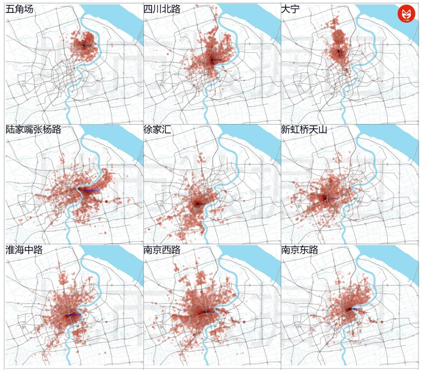

简介
我们综合运用手机信令数据、线下刷卡交易数据，用数据来认识上海商业中心的格局。
商圈排名
我们选用了占地面积、客流量（基于手机信令数据）、消费金额（基于线下刷卡交易数据）三个指标，赋予不同的权重，得到了商圈的综合排名：。top9的商业中心分别为：陆家嘴-张杨路、南京东路、淮海中路、南京西路、新虹桥天山、徐家汇、四川北路、五角场和大宁。
客流活跃时间
本区域40个城市中心城区以外的地域以乡镇行政边界为空间单元进行划分。采用上述方法，研究最终将昌九区域划分为639个空间单元，包括40个城市空间单元、599 个乡镇空间单元。
客流来源
我们筛选出了晚上6：00-9：00出现在这些商圈的人群，然后追踪他们的居住地址，从而绘制出9大商圈的客流分布。研究发现，各大商圈的客流基本符合就近原则、轨道交通建设对延展客流来源地的作用非常显著、商圈的影响范围很难跨越黄浦江。
商圈能级与特征
我们设计了多个指标来进行商圈的比较。
服务半径指数
以商圈中心点为圆心向外画圆，能够覆盖80%客流的圆的半径。
本地化指标
商圈3km半径内，覆盖的客流比例。
商圈的空间势力范围
超过40%的客流更倾向于前往该商圈而不是其他商圈。
疆域指数
用于衡量商圈的空间影响力，其含义是商圈的势力范围面积与商圈面积的比值。
子民指数
各个商圈势力范围内客流的多少。

总结
不同的榜单上，各大商圈的排名变动极大。而血腥味最浓的，无疑是空间势力范围图中呈现灰色的地区。或许，顶级的商业中心将通过营销手段和轨道交通进一步增强其在灰色地区的影响力；或许，已有的地区级商业中心将继续保有“地头蛇”的优势；或许，新的商业中心将在这些灰色区域拔地而起；或许，这些地区的战况将持续胶着。